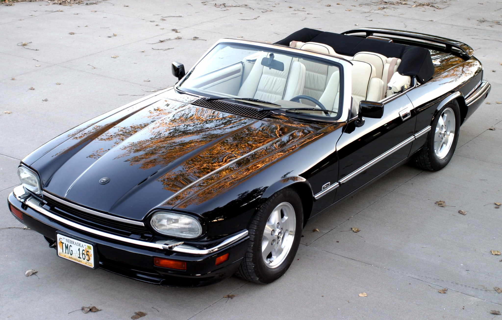
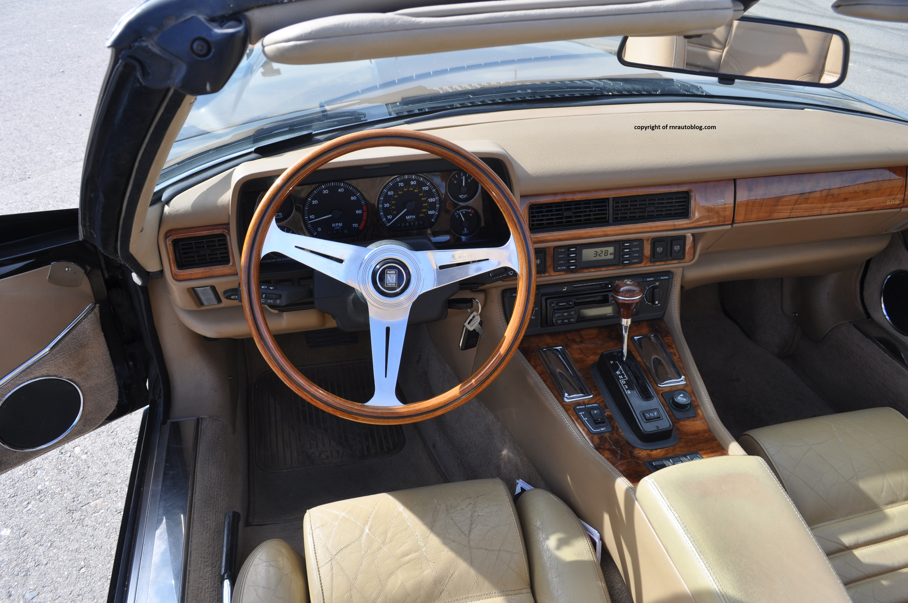

The Jaguar XJ-S was a departure from tradition, a car that redefined the brand’s approach to grand touring. It was not a lightweight sports car like its predecessor but a machine built for effortless, high-speed travel with an unmistakable sense of elegance. Its presence was unmistakable, with a design that balanced aggression and refinement, capturing the essence of long-distance motoring. Inside, the cabin enveloped occupants in a space of understated luxury, where supple materials and thoughtful details emphasized comfort over outright sportiness. The XJ-S was a car that prioritized the journey itself, making every mile feel like an event.
Over its long production run, the XJ-S developed a character all its own, evolving with the times while staying true to its original philosophy. It was a car that exuded sophistication, equally at home on a sweeping country road or parked outside an exclusive venue. Owners valued its ability to blend power with poise, offering a unique driving experience that was neither brash nor ostentatious but quietly confident. Even today, the XJ-S stands apart from its contemporaries, its distinctive shape and effortless charm ensuring it remains one of Jaguar’s most memorable and enduring creations.
The XJ-S was produced in several variations over its two-decade lifespan, evolving from its early V12-powered grand tourer roots into a more versatile lineup that included a six-cylinder option and even a convertible. Early models, powered by Jaguar’s legendary 5.3L V12, offered smooth yet complex performance, but they require diligent maintenance, particularly regarding cooling systems and fuel injection components. Later cars introduced the more efficient 4.0L inline-six, which proved more reliable and easier to maintain, while the rare 6.0L V12 models represented the peak of refinement and power. Rust is a major concern across all generations, especially around the wheel arches, sills, and floorpans. Electrical gremlins, a known Jaguar quirk of the era, can affect everything from the climate control to the power windows, so a thorough pre-purchase inspection is essential. Well-maintained examples reward their owners with a truly unique blend of British luxury and GT performance, but neglected ones can quickly become money pits.